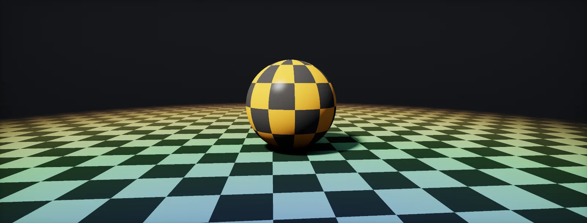

Textures and Sampling
A texture is a lookup table the GPU can read anywhere, fast. This unit covers how a shader asks for a value and what the hardware does between the texels.

Textures and texels
A is an image stored in GPU memory, a grid of small cells like the pixels of the screen. To keep the two apart, the cells of a texture are called . A 1024 × 1024 texture has a little over a million of them.
Each texel holds up to four numbers (red, green, blue, alpha). They do not have to be a colour: a normal map stores a direction, a mask map stores roughness and metallic values, a height map stores one height. A texture is just a fast lookup table that a shader can read at any position. How much memory one costs, and how compression shrinks it, is the subject of Texture Memory.
UV coordinates
Shaders do not ask for "texel 37". They ask for a position given as two numbers between 0 and 1, called : u across, v up. (0, 0) is one corner of the texture, (1, 1) the opposite one. The same UV works for a 256 or a 4096 texture, the same way uv made a shader independent of the screen size.
The GPU turns UV into a texel position by multiplying with the texture size. Note the half texel: texel centres sit at 0.5, 1.5, 2.5…, so a UV of exactly 0 is the left edge of the first texel, not its centre.
Where do UVs come from? Usually from the mesh: an artist unwraps the model and every vertex stores a UV, which is then interpolated to every pixel. A shader can also compute UVs itself, for example from world position for a tiling ground texture.
Wrap modes
A UV can leave the 0–1 range: tiling a floor texture ten times means UVs up to 10. The texture's decides what happens. Each mode is one of the built-in functions applied to the UV before the lookup:
Repeat is the default for tiling materials. Clamp is right for anything that must not bleed from one side to the other: UI, decals, lookup textures, and the edges of a texture atlas.
Filtering
A UV almost never lands exactly on a texel centre. The texture's decides the value in between:
- Point (nearest): take the nearest texel. Blocky when magnified; right for pixel art and for data that must not be blended, such as IDs.
- Bilinear: take the four nearest texels and blend them by distance, first across, then up. It is two lerps in a row and a third between their results:
Trilinear filtering adds a blend between two mipmap levels; anisotropic filtering takes several such samples along a stretched footprint. Both follow below in mipmaps.
Mipmaps and mip selection
When a textured surface is far away, one screen pixel covers many texels. Reading just one of them gives a different texel every frame as the camera moves, and the surface shimmers. The fix is to store pre-shrunk copies of the texture, each half the size of the previous one. These are , and the GPU picks the level whose texels are about the size of a pixel:
The GPU measures "texels per pixel" by itself. Pixels are shaded in 2×2 quads (quads), so it can compare the UV of neighbouring pixels: the screen-space derivatives ddx(uv) and ddy(uv). Multiplied by the texture size, the larger of the two says how many texels one pixel spans, and its log₂ is the mip level:
With anisotropic filtering, the GPU takes several samples along the long side of the pixel's footprint and picks the mip from the short side, so floors at a grazing angle stay sharp (anisotropy settings). A full mip chain costs a third more memory than the top level alone (what a texture costs), and how far away a texture switches levels depends on its texel density on screen.
When the measurement breaks: jumps and loops
The derivatives assume the UV changes smoothly from pixel to pixel. Two common cases break that. UVs that jump: atlas cells, per-room UVs, wrapped coordinates. And UVs computed in a loop or branch, where neighbouring pixels stop at different iterations: parallax occlusion mapping, ray marching. A jump looks like a huge UV change, the GPU picks a tiny mip, and a seam or a line of blurred texels appears.
The fix is always the same: compute the gradients from something continuous (the original UV before the loop, or the world position) and pass them to the sampler explicitly. That is SampleGrad in HLSL, SAMPLE_TEXTURE2D_GRAD in Unity, and Texture2DSampleGrad or a sampler with Derivative mip mode in Unreal. Do it for every texture read at the shifted UV, not only inside the loop.
Build it in Unity HDRP
Most of this unit is set on the texture asset and the sampler, not in code. The exercise rebuilds bilinear filtering by hand to show it matches the hardware. Written for Unity 6 with HDRP 17; Unity 2022 LTS works the same apart from a few renamed menu entries.
- Select a texture in the Project window. In the Inspector: Wrap Mode (Repeat, Clamp, Mirror, Mirror Once), Filter Mode (Point, Bilinear, Trilinear), Generate Mipmaps (under Advanced) and Aniso Level. These are the defaults the sampler uses.
- Create the graph: in the Project window, Create > Shader Graph > HDRP > Unlit Shader Graph. Open it and check the Graph Inspector > Graph Settings.
- Add a Sample Texture 2D node and a Sampler State node connected to its Sampler input. The Sampler State overrides filter and wrap in the shader: set it to
PointandClampand compare. - Use Tiling And Offset on the UV to repeat the texture: UV × 4 shows the wrap mode at work.
- Save
ManualBilinear.hlsl. In the graph, add a Custom Function node. Set Type toFile, Source toManualBilinear.hlsland Name toManualBilinear(without the_floatsuffix). Add the inputs Tex (Texture2D), UV (Vector 2) and the outputs Out (Vector 4), in that order and with those types: they must match the function's parameters. - Lerp between the node result and the manual result with a slider: they match on a texture without mipmaps (the manual version always reads mip 0).
#ifndef ATLAS_MANUAL_BILINEAR_INCLUDED
#define ATLAS_MANUAL_BILINEAR_INCLUDED
// Bilinear filtering by hand: find the four nearest texel centres and lerp across, across, then up.
// Shader Graph passes textures as UnityTexture2D; .tex is the texture, .texelSize = (1/w, 1/h, w, h).
void ManualBilinear_float(UnityTexture2D Tex, float2 UV, out float4 Out)
{
float2 size = Tex.texelSize.zw;
float2 p = UV * size - 0.5; // texel centres sit at half-texel positions
float2 f = frac(p);
int2 i0 = (int2)floor(p);
int2 s = (int2)size;
int2 a = ((i0 % s) + s) % s; // repeat wrap mode, safe for negative values
int2 b = ((i0 + 1) % s + s) % s;
float4 t00 = LOAD_TEXTURE2D(Tex.tex, int2(a.x, a.y));
float4 t10 = LOAD_TEXTURE2D(Tex.tex, int2(b.x, a.y));
float4 t01 = LOAD_TEXTURE2D(Tex.tex, int2(a.x, b.y));
float4 t11 = LOAD_TEXTURE2D(Tex.tex, int2(b.x, b.y));
Out = lerp(lerp(t00, t10, f.x), lerp(t01, t11, f.x), f.y);
}
#endifIn code, the hardware path is one line: SAMPLE_TEXTURE2D(Tex.tex, Tex.samplerstate, UV), or Tex.Sample(Tex.samplerstate, UV). Use SAMPLE_TEXTURE2D_LOD wherever there are no screen derivatives (vertex stage, loops with varying UVs, compute shaders). For how big a texture should be and how it is compressed, see Texture Packing and Import Settings.
Identical nodes and macros. On mobile, prefer Bilinear over Trilinear and keep Aniso Level low; both cost texture bandwidth.
Texture asset: X/Y-axis Tiling Method, Filter and Mip Gen Settings. In the material, the TextureSample node's Sampler Source can override wrap and filter; Shared: Wrap/Clamp samplers avoid the 16-sampler limit.
Sources and further reading
The formulas and engine details in this unit come from these references. Engine documentation changes between versions.
- TutorialTexturesJoey de Vries · LearnOpenGLWrapping, filtering and mipmaps with code.
- SpecTexture level of detail (mip selection)Khronos · OpenGL 4.6 core, section 8.14The official formulas for mip level selection and filtering.
- ArticleUnderstanding BCn Texture Compression FormatsNathan ReedWhat happens to textures after sampling basics: GPU compression.